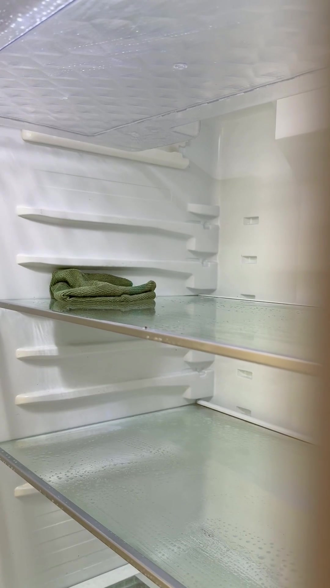
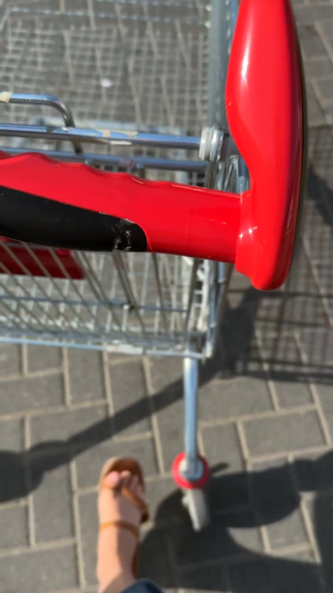
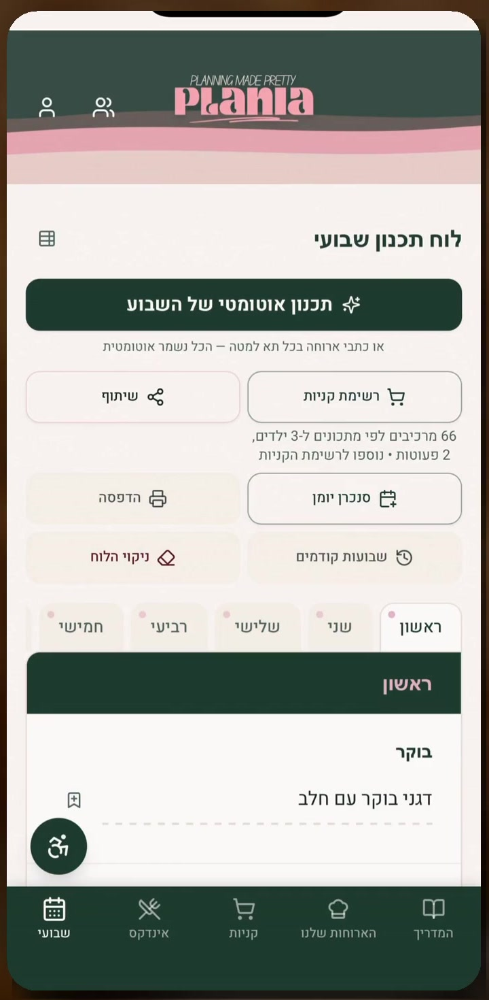
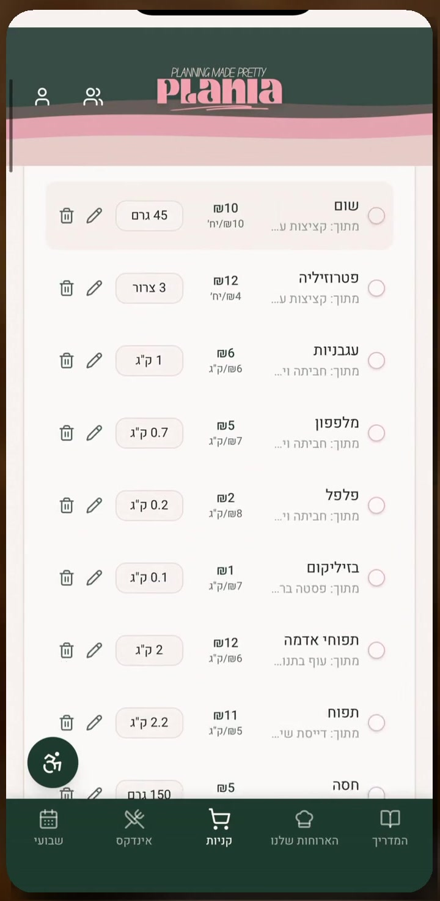

2/10ואני עומדת מול המקרר הפתוח, כאילו ארוחת ערב תקפוץ משם לבד.

3/10וזה לא
שאני לא
מסודרת.
זו פשוט עוד החלטה אחת, כל יום מחדש,
בתוך יום שכבר מלא עד הסוף.
וזה מתיש. גם אותך, נכון?
ככה זה נראה אצלי, ב-4 צעדים ←
בוחרת 5 ארוחות ערב לשבוע.
לא מושלם. פשוט מתוכנן.

מה שמחכה במקרר נכנס לתפריט.
הרבה פחות "אופס, זה התקלקל".
נסיעה אחת לסופר.
בלי "רגע, שכחתי שמנת".

תבנית כפולה, וחצי שבוע כבר מסודר.
ופחות משלוחים "כי אין כוח לחשוב".
זה לא שהשבוע שלי מתוקתק. ממש לא.
פשוט יש לי דבר אחד פחות לחשוב עליו כל יום.